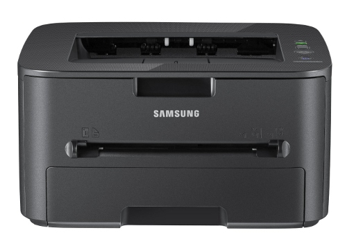
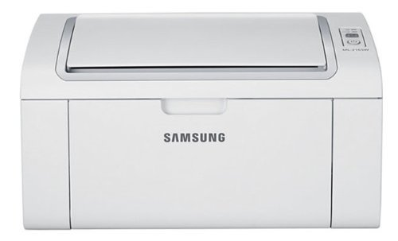

Samsung Printers on Ubuntu
After installing the Lubuntu flavour of Ubuntu on most of my machines, I then had to remember how to setup the printer. This is a ‘note to self’ post, hopefully it might be useful to other people.
I don’t print a lot. It it easy and cheap to order family photos online or print them at the local photo shop. But when I do want to print (e.g. boarding pass), I want it to work.
That is why I hate inkjet printers, they are so unreliable and fragile, and the cartridges run out very quickly. So a few years ago I bought a laserjet. They cost a little more but actually work.
I did not want a scanner attached to the top. Scanning is much easier with a separate scanner that you can manipulate into different positions.
I wanted something with only a black cartridge and to be as simple as possible. The extra buttons and features are just gimmicks that nobody really wants (and probably are hard to get going on Linux anyway). I didn’t really care about having wifi or ethernet on the printer since it was expensive back then and, as long as the computer that the usb printer it is plugged into is turned on, Linux computers share usb printers very easily.
So I bought the Samsung ML-1915 which fitted the bill and love it. Everytime I see a friend or relative struggling with an inkjet I think fondly of my laserjet :) It once got completely covered in building dirt but cleaned up very well. It is has been a loyal piece of kit.
The world moves on and it has been replaced by more modern and cheaper printers like the Samsung ML-2165. It does not look quite so cool in white but it is half of the price so who cares.
Anyway my printer, like a lot of the Samsung printers, uses the Samsung Unified Linux Driver which for unknown reasons does not seem to be in Ubuntu by default, but it is pretty easy to install it.
Surprisingly enough, the Linux driver did come on a CD that came with the printer but it is easier to use the third party repository maintained at the bchemnet.com website.
Firstly you need to edit the sources list to add a repository, so open the file in your favourite editor:
sudo nano /etc/apt/sources.list
Now add the following line:
deb http://www.bchemnet.com/suldr/ debian extra
Then we need to add the key for that repository:
wget -O - http://www.bchemnet.com/suldr/suldr.gpg | sudo apt-key add -
Then we need to update the list of packages available:
sudo apt-get update
Now we can finally install the driver:
sudo apt-get install samsungmfp-driver
It would be much easier if that package was in the standard repositories but there you go. Now you can just add the printer using the normal graphical tool in your system.
In Ubuntu, this is under “System Settings” then “Printing”. In Lubuntu, this is under “System Tools” then “Printers”. Or you can just put system-config-printer into the terminal.